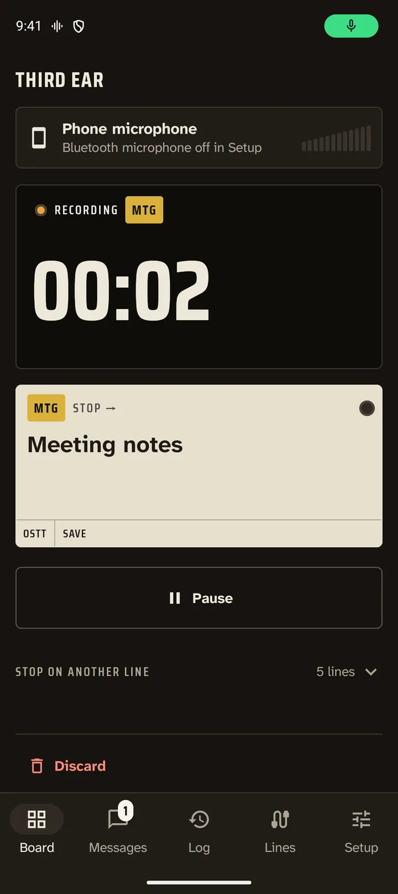
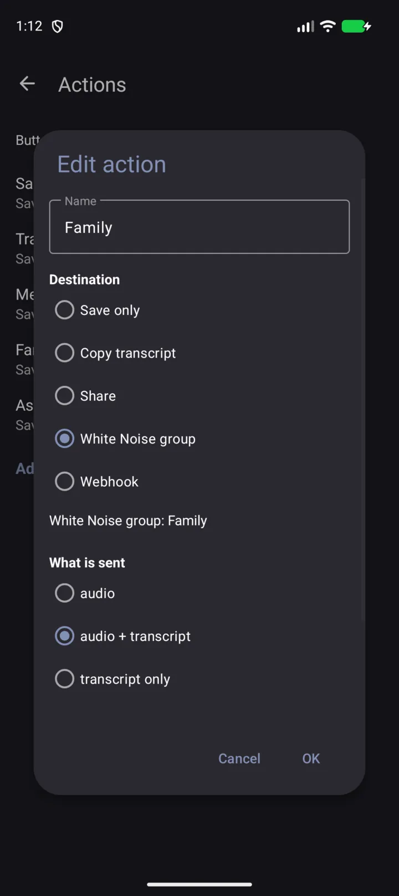
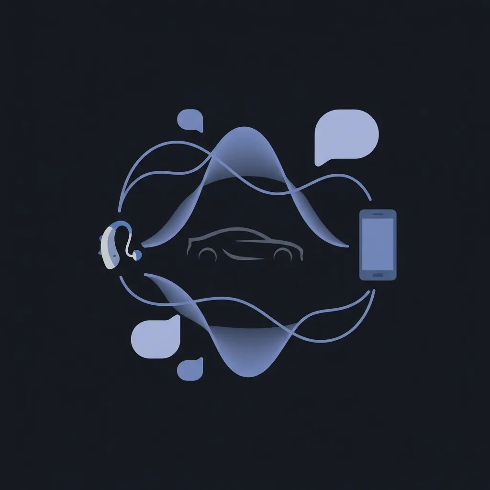
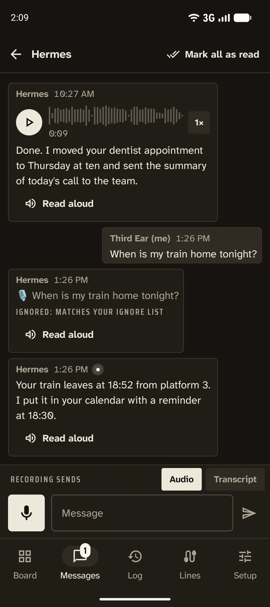
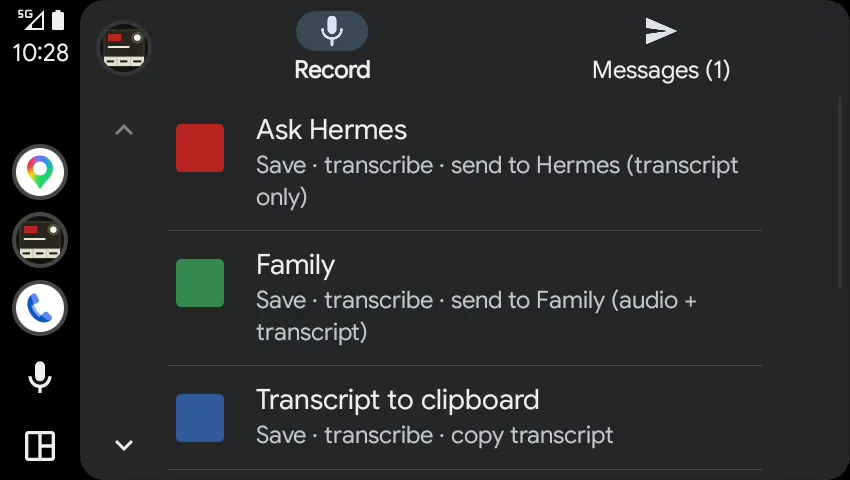
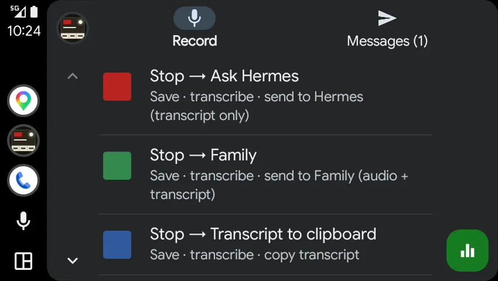

Diktafón pre kozmický vek
Najmodernejší diktafón pre Android a tretie ucho na všetko, čo by si inak zabudol zapísať. Nahráva z telefónu, Bluetooth slúchadiel, načúvacích aparátov s LE Audio aj z auta. Prepis vznikne v telefóne a výsledok (prepis alebo zvuk) pôjde tam, kam hovorí tlačidlo, na ktoré si ťukol: do úložiska telefónu, do schránky, do skupiny White Noise (Marmot) alebo ako HTTPS požiadavka.
A je to najlepší spôsob, ako sa rozprávať so svojimi AI agentmi, vrátane hermes-agent. Ťukneš, povieš, agent dostane tvoje slová a jeho odpoveď ti prečíta do uší.
- Zadarmo
- Otvorený kód (GPLv3)
- Bez účtu a analytiky
- Android 12+

Tlačidlo pre každý cieľ, ako v malom riadiacom stredisku
Väčšina diktafónov má jedno tlačidlo nahrávania a veľa nádeje. Third Ear má tlačidlá, ktoré si nadefinuješ sám: názov a to, čo sa stane potom.
- iba uložiť nahrávku
- skopírovať prepis do schránky
- zdieľať súbor alebo text
- poslať zvuk, prepis alebo oboje do skupiny vo White Noise
- poslať na webhook (n8n, Home Assistant, vlastný server)
Ťukni na tlačidlo a nahrávanie sa začne. Počas nahrávania sa každé tlačidlo zmení na „Stop → názov“ a napíše, čo urobí, takže cieľ môžeš ešte zmeniť v okamihu zastavenia. Potom notifikácia ukazuje každý krok (ukladanie, prepis, čakanie na aplikáciu na prepis, odosielanie) a na želanie ho aj povie nahlas, napríklad „Uložené, prepisujem.“
Každá linka na Paneli má vlastnú farbu šnúry, krátky kód a kontrolku, takže stav všetkého prečítaš jedným pohľadom:
- oranžová: prepisuje sa alebo odosiela
- biela: zo skupiny tejto linky čaká odpoveď
- červená: nedoručené; nahrávka je uložená a Skúsiť znova je na jedno ťuknutie



Najlepší spôsob, ako sa rozprávať so svojimi agentmi
Písať agentovi na telefóne je pomalé a hlasové režimy aplikácií chcú, aby si pozeral na displej. Third Ear z akéhokoľvek agenta urobí niekoho, s kým sa rozprávaš pri chôdzi, za volantom alebo pri varení: jedno ťuknutie (alebo dlaždica rýchlych nastavení, widget, obrazovka v aute) nahráva, telefón prepíše a slová idú agentovi.
- Cez White Noise: daj Third Ear a agenta do jednej šifrovanej skupiny. hermes-agent sa do skupín White Noise pripája cez konektor MDK. Odpoveď sa vráti a prečíta sa alebo prehrá v slúchadlách či načúvacích aparátoch.
- Cez HTTPS: pošli prepis alebo zvuk na webhook agenta, do n8n alebo na vlastný server.
- Každý agent alebo každý druh požiadavky má vlastné tlačidlo: „Spýtaj sa Hermesa“, „Do poznámok“, „Zapíš do n8n“.
Ozvenu tvojho prepisu od agenta preskočí položka 🎙️ v zozname ignorovaných, takže počuješ len odpoveď.
Agenti za konektorom MDK musia povoliť npub aplikácie Third Ear (--allow-welcomer alebo --allow-user).
Bluetooth mikrofóny, ktoré sa naozaj ozvú
Android pustí Bluetooth mikrofón len k aplikáciám, ktoré sa správajú ako telefonát, a Third Ear sa tak správa. Smerovanie zvuku vybaví za teba, takže môžeš nahrávať zo slúchadiel, z načúvacích aparátov s LE Audio aj z handsfree mikrofónu v aute.
- Počká, kým sa LE Audio rozbehne („Čakám na Bluetooth mikrofón…“, zvyčajne 1,7 až 3,5 s).
- Keď mikrofón naozaj dodáva zvuk, povie nahlas, že môžeš hovoriť.
- Tlačidlo zdroja na obrazovke nahrávania ukáže, ktorý mikrofón práve nahráva.
- Ak sa Bluetooth mikrofón nerozbehne alebo sa odpojí, Third Ear sa raz prepne na mikrofón telefónu a ozve sa zvukový signál.
- Mikrofón môžeš prepnúť aj uprostred nahrávania. Pokračuje sa v tom istom súbore.
Overené na Pixeli s načúvacími aparátmi s LE Audio.

Najlepšie funguje s Offline Speech to Text
Third Ear nemá vlastný rozpoznávač reči. Hotový súbor odovzdá aplikácii Offline Speech to Text (OSTT), čo je bezplatná aplikácia, ktorá prepisuje v zariadení, offline. OSTT je taký mozog za ušami. Beží to na pozadí a zamknutá obrazovka nevadí.
- Ak je OSTT práve zaneprázdnená (napríklad diktuje jej klávesnica), Third Ear počká a skúša to znova asi 10 minút.
- Prepisy sa ukladajú ako súbory .txt vedľa nahrávky a môžeš ich kopírovať.
Získať Offline Speech to Text na Zapstore
Zápisky zo schôdzok a diktovanie
Vyrob si akciu „Meeting notes“: nahráš, dostaneš prepis. Alebo použi „Prepis do schránky“ a diktuj do ľubovoľnej aplikácie: nahraj, ťukni, vlož. Prepisy sú obyčajné textové súbory vedľa zvuku, takže sa v nich dá hľadať.
Hlasové správy vo White Noise a odpovede späť
White Noise je end-to-end šifrovaný messenger postavený na nostr (Marmot/MLS). Third Ear tam má vlastnú identitu, ukázanú ako npub s QR kódom. Pozvi ho do skupiny, prijmi pozvánku a akcia pošle tvoju hlasovú správu s prepisom ako popisom, alebo iba text.
Odpovede sa vracajú. Pre každú skupinu si vyberieš: vypnuté, prehrávať hlasové správy, alebo prehrávať hlas a text čítať nahlas hlasovou syntézou. Deje sa to automaticky alebo na požiadanie cez „Prečítať nahlas“ v notifikácii. Zoznam ignorovaných (predvolene 🎙️) preskočí správy, ktoré nechceš čítať. Záložka Správy ukazuje skupiny ako chatovacia aplikácia, s tlačidlami Prehrať, Prečítať nahlas a Označiť všetko ako prečítané. Kľúč si zazálohuješ exportom a importom nsec.


V aute s Android Auto
Third Ear sa v Android Auto ukáže ako aplikácia na médiá. Tvoje linky sú zoznam a obrazovka Prehráva sa je obrazovka nahrávania. Ťukneš na linku a nahráva, ťukneš na ■ a nahrávka ide tam, kam ju linka posiela.



- Nahrávanie: ťukni na linku. Otvorí sa Prehráva sa s tromi tlačidlami: pauza, ■ zastaviť a uložiť s touto linkou, ✕ zahodiť.
- Rozmyslel si sa, kam to má ísť? Počas nahrávania ťukni na šípku späť. V zozname je teraz „Stop → linka“, ťukni na tú, ktorú chceš.
- Volant: kým nahrávka beží, prehrať/pauza ju pozastaví a „ďalšia“ ju uloží. Potom tlačidlá zase patria hudobnej aplikácii.
- Karta Správy: posledné správy z White Noise, ťuknutím ich prehráš. Nové správy prídu aj ako upozornenia v aute s Odpovedať a Označiť ako prečítané.
- „Prehrať“ nahrávanie nikdy nespustí: ani keď sa auto pripojí a Android Auto pustí poslednú mediálnu aplikáciu, ani zo slúchadiel. Spustí ho len ťuknutie na linku.
- Nahráva mikrofónom telefónu; riadok pod názvom ukazuje, ktorý mikrofón práve používa. Nechaj telefón tam, kde ťa počuje.
Raz nastaviť
- Po inštalácii raz otvor Third Ear na telefóne, aby mal priečinok a aby mu Android dovolil mikrofón.
- Na telefóne otvor nastavenia Android Auto (Nastavenia → Pripojené zariadenia → Predvoľby pripojenia → Android Auto). Zroluj dole, desaťkrát ťukni na Verzia a povoľ režim pre vývojárov.
- V ponuke ⋮ otvor Nastavenia pre vývojárov a zaškrtni Neznáme zdroje.
- Pripoj sa k autu. Third Ear nájdeš medzi aplikáciami. Ak tam nie je, vynúť zastavenie Android Auto a pripoj sa znova, zoznam aplikácií si drží pre každé pripojenie. Cez Prispôsobiť spúšťač ho dáš dopredu.
Prečo aplikácia na médiá?
Android Auto má dva druhy aplikácií, ktoré by to vedeli. Aplikácie pre auto postavené na Car App Library od Googlu si kreslia vlastné mriežky a obrazovky. Aplikácie na médiá dajú Android Auto zoznam a prehrávač a Android Auto ich nakreslí samo. Od Android Auto 17.x beží aplikácia pre auto len vtedy, keď ju nainštaloval Google Play: zo Zapstore, F-Droidu alebo stiahnutého APK ju odmietne s Package DENIED; failed all other checks, aj OsmAnd či Home Assistant, a prepínač Neznáme zdroje sa na aplikácie pre auto nevzťahuje. Na aplikácie na médiá áno. Preto Third Ear podáva nahrávanie ako médiá: linky sú „skladby“ a prehrávač je diktafón. Podrobnosti aj kód sú v článku o kontrole na Google Play.
Verzia ako aplikácia pre auto, mriežka liniek s obrazovkou „Stop → linka“, v aplikácii zostala. Tam, kde ju Android Auto pustí (inštalácia z Google Play, rootnutý telefón so záplatovaným Android Auto, Desktop Head Unit od Googlu), ukáže mriežku namiesto zoznamu. Ikona Third Ear je v oboch prípadoch jedna.
Stavané na dlhé nahrávky, aj s vypnutou obrazovkou
- Nahráva ďalej s vypnutou obrazovkou a zamknutým telefónom, kým ju nezastavíš.
- Odolné voči pádu: ak systém aplikáciu zabije, nahraté sa pri ďalšom spustení obnoví a uloží. Stratí sa najviac posledná sekunda.
- Strážca ticha ťa upozorní, keď mikrofón dodáva digitálne ticho, napríklad pre vypnutý spínač mikrofónu alebo preto, že ho drží iná aplikácia.
- Formáty: AAC (.m4a), Opus (.ogg) a MP3.
Po ruke všade
Tri dlaždice rýchlych nastavení, každá viazaná na jednu z tvojich akcií, miniaplikácia na domovskej obrazovke a skratky: podrž ikonu, alebo naviaž ktorúkoľvek linku na tlačidlo či automatizáciu (Key Mapper, Tasker). Obrazovky Third Ear sú v angličtine, slovenčine, češtine, nemčine a španielčine.
Zadarmo, s otvoreným kódom a súkromne
Third Ear je slobodný softvér pod licenciou GPLv3. Nepotrebuje účet a nemá analytiku. Prepis sa robí v tvojom telefóne, nie na nejakom serveri na obežnej dráhe.
Je to fork aplikácie Fossify Voice Recorder, ktorý vytvoril Juraj Bednár.
Pre geekov: nahrávať z Bluetooth je prekvapivo ťažké
Bluetooth mikrofón je na Androide mikrofón na telefonovanie. Aplikácia, ktorá si ho len vyberie ako vstup, nahráva namiesto neho z mikrofónu telefónu, a to bez jedinej chyby. Väčšina diktafónov to robí zle.
Aj keď sa to robí správne, mikrofón v slúchadlách potrebuje po spustení nahrávania 2,5 až 3 sekundy, kým sa ozve, a niektoré načúvacie aparáty s LE Audio dávajú iba digitálne ticho, ak do nich zároveň nič nehrá. Third Ear nasmeruje mikrofón na hovory, počká na prvý skutočný zvuk, povie ti, kedy hovoriť, a keď treba, prepne na mikrofón telefónu so zvukovým signálom.
Všetko, čo sme sa naučili, sme spísali aj s kódom, aby to aj iné aplikácie robili dobre: Recording from a Bluetooth microphone on Android (po anglicky). Funguje aj ako skill pre programovacích agentov a pokrýva aj prepis v telefóne cez Offline Speech to Text.
Čo je nové
Novinky z vývoja a tipy, priamo z Nostru.
Získať Third Ear
Pripravený na štart? Third Ear stiahneš zo Zapstore alebo ako APK z vydania na GitHube. Vyžaduje Android 12 alebo novší.
Stiahnuť zo Zapstore Stiahnuť APK Zdroj na GitHube
Najprv si nainštaluj Offline Speech to Text, ten robí prepis.